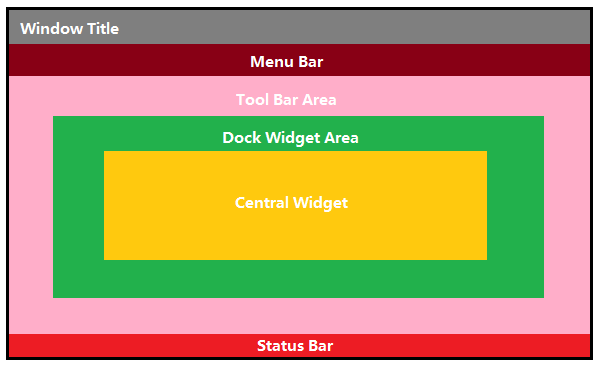
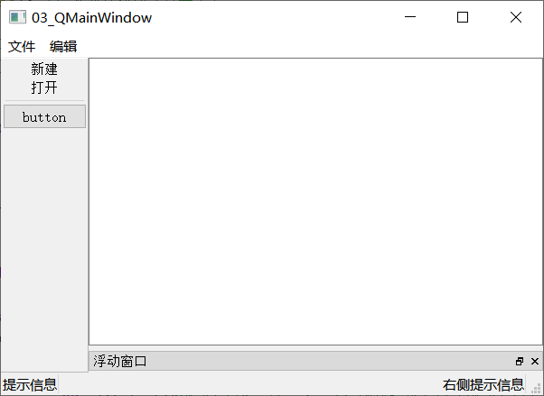

Qt学习 P2：QMainWindow，资源文件，对话框
QMainWindow
QMainWindow是为用户提供主窗口程序的类，包含菜单栏（menu bar）、工具栏（tool bar）、锚接部件/浮动窗口（dock widget）、状态栏（status bar）、中心部件（central widget）。

新建项目，选择QMainWindow类。
1
2
3
4
5
6
7
8
9
10
11
12
13
14
15
16
17
18
19
20
21
22
23
24
25
26
27
28
29
30
31
32
33
34
35
36
37
38
39
40
41
42
43
44
45
46
47
48
49
50
51
52
53
54
55
56
57
58
| mainwindow.cpp
#include "mainwindow.h"
#include <QMenuBar>
#include <QToolBar>
#include <QPushButton>
#include <QStatusBar>
#include <QLabel>
#include <QDockWidget>
#include <QTextEdit>
MainWindow::MainWindow(QWidget *parent)
: QMainWindow(parent)
{
resize(600, 400);
QMenuBar *bar = menuBar();
setMenuBar(bar);
QMenu *fileMenu = bar->addMenu("文件");
QMenu *editMenu = bar->addMenu("编辑");
fileMenu->addAction("新建");
fileMenu->addSeparator();
QAction *open = fileMenu->addAction("打开");
QToolBar *toolBar = new QToolBar(this);
addToolBar(toolBar);
addToolBar(Qt::LeftToolBarArea, toolBar);
toolBar->setAllowedAreas(Qt::LeftToolBarArea | Qt::RightToolBarArea);
toolBar->setFloatable(false);
toolBar->setMovable(false);
toolBar->addAction("新建");
toolBar->addAction(open);
toolBar->addSeparator();
QPushButton *btn = new QPushButton("button", this);
toolBar->addWidget(btn);
QStatusBar *stBar = statusBar();
setStatusBar(stBar);
QLabel *label = new QLabel("提示信息", this);
stBar->addWidget(label);
QLabel *label2 = new QLabel("右侧提示信息", this);
stBar->addPermanentWidget(label2);
QDockWidget *dockWidget = new QDockWidget("浮动窗口", this);
addDockWidget(Qt::BottomDockWidgetArea, dockWidget);
dockWidget->setAllowedAreas(Qt::TopDockWidgetArea | Qt::BottomDockWidgetArea);
QTextEdit *edit = new QTextEdit(this);
setCentralWidget(edit);
}
|

资源文件
新建项目，打开UI界面。可以在“设计”窗口中进行布局的可视化设置。
想要使用外部的资源文件，如图片等，一种方式是使用绝对路径。
1
2
3
4
5
6
7
8
9
10
11
12
13
| mainwindow.cpp
#include "mainwindow.h"
#include "ui_mainwindow.h"
MainWindow::MainWindow(QWidget *parent) :
QMainWindow(parent),
ui(new Ui::MainWindow)
{
ui->setupUi(this);
ui->actionnew->setIcon(QIcon("C:/Users/zqh-wz/Desktop/LearningQT/04_QtSource/writting.png"));
}
|
但绝对路径显然不是一个好的处理办法。
Qt资源系统是一个跨平台的资源机制，用于将程序运行时所需要的资源以二进制的形式存储于可执行文件内部。如果你的程序需要加载特定的资源（图标、文本翻译等），那么，将其放置在资源文件中，就再也不需要担心这些文件的丢失。也就是说，如果你将资源以资源文件形式存储，它会编译到可执行文件内部。
在项目中添加新文件—Qt—Qt Resource File，生成res.qrc文件。
右键Open in Editor，设置资源文件。
添加前缀，可以暂时先填入/。
将资源放入项目目录下，添加文件。
要使用Qt资源，使用: + 前缀名 + 文件名。
1
| ui->actionnew->setIcon(QIcon(":/writting.png"));
|
对话框QDialog
Qt 中使用QDialog类实现对话框。就像主窗口一样，我们通常会设计一个类继承QDialog。
QDialog（及其子类，以及所有Qt::Dialog类型的类）的对于其 parent 指针都有额外的解释：如果 parent 为 NULL，则该对话框会作为一个顶层窗口，否则则作为其父组件的子对话框（此时，其默认出现的位置是 parent 的中心）。
顶层窗口与非顶层窗口的区别在于，顶层窗口在任务栏会有自己的位置，而非顶层窗口则会共享其父组件的位置。
对话框分为两种：模态对话框（弹出后不可以对其他窗口进行操作）和非模态对话框（弹出后可以对其他窗口进行操作）。
1
2
3
4
5
6
7
8
9
10
11
12
13
14
15
16
17
18
19
20
| #include "mainwindow.h"
#include "ui_mainwindow.h"
#include <QDialog>
MainWindow::MainWindow(QWidget *parent) :
QMainWindow(parent),
ui(new Ui::MainWindow)
{
ui->setupUi(this);
connect(ui->actionnew, &QAction::triggered, [=]() {
QDialog dlg(this);
dlg.resize(200, 100);
dlg.exec();
QDialog *dlg2 = new QDialog(this);
dlg2->resize(200, 100);
dlg2->show();
});
}
|
当用户点击“新建”按钮时，弹出对话框。使用信号槽机制连接。
此处非模态对话框的实现尚有一点缺陷。当用户反复点击“新建”按钮，在匿名函数中申请的若干QDialog对象直到整个程序被关闭时才会被销毁。
通过设置DeleteOnClose属性可以使对象在用户关闭对话框之后即被销毁。
1
| dlg2->setAttribute(Qt::WA_DeleteOnClose);
|
标准对话框
标准对话框，是Qt内置的一系列标准化对话框，用于简化开发。
Qt 的内置对话框大致分为以下几类：
- QColorDialog：选择颜色
- QFileDialog：选择文件或者目录
- QFontDialog：选择字体
- QInputDialog：允许用户输入一个值，并将其值返回
- QMessageBox：模态对话框，用于显示信息、询问问题等
- QPageSetupDialog：为打印机提供纸张相关的选项
- QPrintDialog：打印机配置
- QPrintPreviewDialog：打印预览
- QProgressDialog：显示操作过程
消息对话框QMessageBox
可以直接使用静态成员函数调用，全部为模态对话框。
1
2
3
4
5
| QMessageBox::critical(this, "critical", "错误");
QMessageBox::information(this, "info", "信息");
QMessageBox::question(this, "question", "提问");
QMessageBox::question(this, "question", "提问", QMessageBox::Save | QMessageBox::Cancel, QMessageBox::Cancel);
QMessageBox::warning(this, "warning", "警告");
|
前三个参数分别为parent指针、对话框标题、对话框内容。
函数返回值为StandardButton，用于判断选择的选项。
1
2
3
4
5
6
7
| if (QMessageBox::Yes == QMessageBox::question(this, "question", "提问")) {
} else {
}
|
其他标准对话框
1
2
3
4
5
| QColor color = QColorDialog::getColor(QColor(255, 0, 0), this);
QString file = QFileDialog::getOpenFileName(this, "打开文件", "C:/", "(*.txt)");
bool flag;
QFont font = QFontDialog::getFont(&flag, QFont("华文彩云", 36));
|